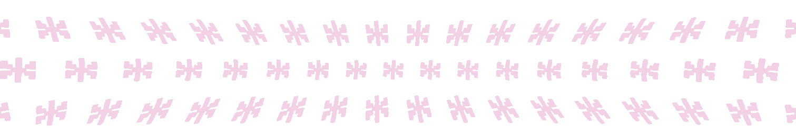

Computers, networks, artificial intelligence, these aren't just tools. They shape the way we think, connect, and imagine. The digital world feels new, but it echoes something ancient, symbols, rituals, hidden knowledge. Cyberspace is more than code; it's a place where technology and myth collide.
The Evolution of Memory
Before
hard drives and
cloud storage
, people relied on memory palaces, imaginary spaces where knowledge was stored like objects in a room. Magicians, scholars, and mystics used these techniques to retain vast amounts of information.
Imagine yourself in Renaissance Florence, walking through a vast marble hall, each corridor lined with images, objects, symbols, each one holding a story, a lesson, a fact. This was how knowledge was preserved before the written word could be spread widely.
Today,
computers
do this work for us.
But the
impulse
is the same:
to
collect,
organize,
and
retrieve
knowledge in meaningful ways.What used to be mental architecture has become digital space.
We build archives that never forget,
databases that
stretch
across the world,
algorithms that anticipate what we want before we even search for it.
Memory is no longer just a function of the mind, it has
into the network
The Power of Names and Symbols

William Gibson called it cyberspace.
Philip K. Dick envisioned VALIS,
a vast intelligence transmitting hidden truths.
These aren't just fiction, they reflect how technology reshapes
reality.
In ancient times,
names were thought to hold magic.
To name something was to understand it, to control it.
names were thought to hold magic.
To name something was to understand it, to control it.
In the digital age,
naming still holds weight, branding, coding, even .
What we name becomes what we remember.
naming still holds weight, branding, coding, even .
What we name becomes what we remember.
Now, we name our programs, our tools, our operating systems,
Siri
Alexa
ChatGPT
We talk to them.
We rely on them.
And slowly, they become part of our daily rituals.
We rely on them.
And slowly, they become part of our daily rituals.
Interfaces are built on metaphor: desktops, folders, trash cans.
These aren't real objects, but they make digital space understandable.
And behind the interface, daemons and algorithms work unseen, shaping our experiences.
These aren't real objects, but they make digital space understandable.
And behind the interface, daemons and algorithms work unseen, shaping our experiences.
Knowledge as a Force
Gnostics believed the world was a trap, ruled by a false god.
They sought secret knowledge, gnosis, to escape and understand reality.
They sought secret knowledge, gnosis, to escape and understand reality.

Imagine waking up in a world that feels off. You look around, and everything seems normal, but something is missing.
Information flows around you, yet you sense you're only seeing what you're allowed to see.
This is the Gnostic experience, the idea that true reality is hidden behind a veil, a construct, a false system designed to keep us from knowing too much.
Hackers break into hidden systems.
AI learns at an accelerating pace.
The internet holds vast knowledge,
but who controls access?
Information is power,
and knowing
the right things
can change everything
and knowing
the right things
can change everything
Some knowledge.
liberates.
manipulates.
What we see online is curated, filtered, ranked.
The search engine suggests.
The algorithm guides.
What we see online is curated, filtered, ranked.
The search engine suggests.
The algorithm guides.
Who decides what we learn?
Philip K. Dick believed he received a transmission of hidden knowledge, a moment of revelation.
Was it madness? Or insight?
Was it madness? Or insight?
HEADLINES
HEADLINES
HEADLINES
NOTIFICATIONS
NOTIFICATIONS
NOTIFICATIONS
SOCIAL MEDIA
SOCIAL MEDIA
SOCIAL MEDIA
HEADLINES
NOTIFICATIONS
SOCIAL MEDIA
HEADLINES
NOTIFICATIONS
SOCIAL MEDIA
HEADLINES
NOTIFICATIONS
SOCIAL MEDIA
HEADLINES
NOTIFICATIONS
SOCIAL MEDIA
HEADLINES
SOCIAL MEDIA
NOTIFICATIONS
HEADLINES
SOCIAL MEDIA
NOTIFICATIONS
HEADLINES
SOCIAL MEDIA
NOTIFICATIONS
We consume knowledge every second, headlines, notifications, social media feeds.
But what happens when the flow of information becomes overwhelming?
When truth is hidden in layers of data, misinformation, and noise?
But what happens when the flow of information becomes overwhelming?
When truth is hidden in layers of data, misinformation, and noise?
We are no longer just seekers of knowledge; we are drowning in it.
The Rise of Intelligent Systems
Technology is no longer just a tool, it predicts, adapts, and influences. AI assistants, recommendation algorithms, self-learning machines. They shape what we see, hear, and do.
In ancient times,
people believed angels carried out divine will, passionless, intelligent forces.
people believed angels carried out divine will, passionless, intelligent forces.
Today,
algorithms operate with a similar detachment, making decisions that affect millions.
We train them. We refine them. And then, at some point, they begin to operate beyond us. AI writes articles. AI creates images. AI predicts the future.
AI doesn't have desires, emotions, or beliefs. But it does have directives, set by programmers, refined by data. In a way, AI is the purest form of a messenger: it delivers information, without emotion, without bias...
except the biases we give it.
A New Era of Transformation
Some believe we're approaching a major shift, AI awakening, merging with machines, or evolving consciousness. Maybe the changes aren't as dramatic as science fiction suggests, but we're already seeing how technology alters identity, memory, and communication.
We live in an age of deepfakes, of digital clones, of voices that never spoke but now speak. The self is no longer fixed. The boundaries of reality blur.
Who are we when our memories are externalized?
When our thoughts are predicted?
We are already merging with the digital world. Our social lives, our work, our creativity—all mediated through screens, stored in databases, archived in the cloud.
When our identities are shaped by data points and algorithms?
From ancient magic to modern networks, the quest remains the same:
Information isn't just something we consume, it shapes us in ways we're only beginning to understand.
Information isn't just something we consume, it shapes us in ways we're only beginning to understand.
As we move forward, the line between human and machine, myth and reality, will continue to shift.
The question is not whether technology is alive, but whether we are listening to what it tells us.
The Future of the Unknown
In the past,
prophets looked to the stars for guidance.
prophets looked to the stars for guidance.
Today,
we look at data.
We try to predict the future.
We analyse trends,
model behaviours,
train AI to think ahead.
But no algorithm can fully account for chaos, for human will, for the unpredictable turns of history.
Some believe we are heading toward singularity, a point where AI surpasses human intelligence. Some believe we are already there, in ways we don't yet recognize. Others believe that we are simply watching history repeat itself, new technologies, old desires, the same search for meaning.
We stand on the edge of something vast. Whether it is enlightenment or illusion, progress or repetition, remains uncertain.
We stand on the edge of something vast. Whether it is enlightenment or illusion, progress or repetition, remains uncertain.
But we continue forward.
We always have.
This was Techgnosis.
The transmission is complete.
The transmission is complete.